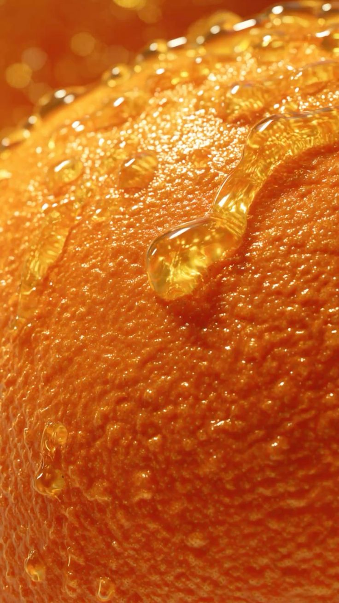
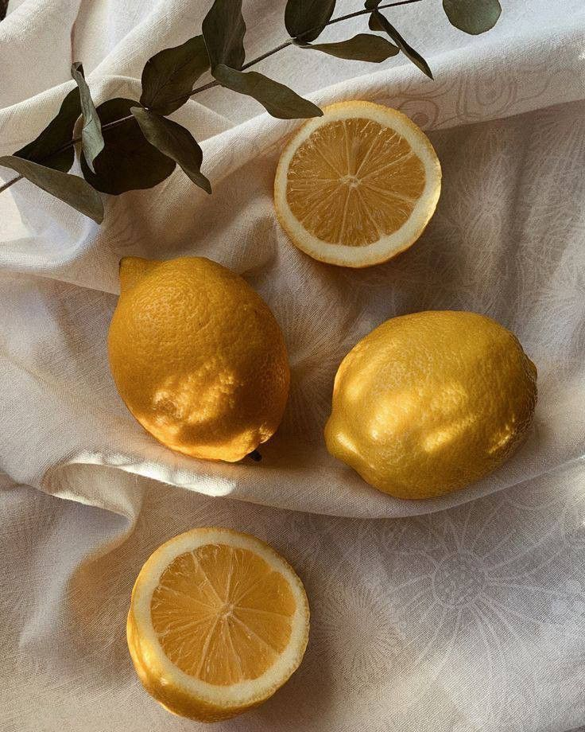
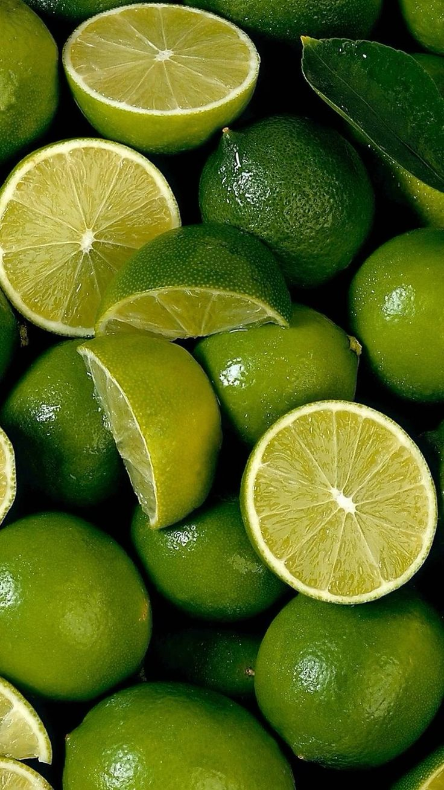
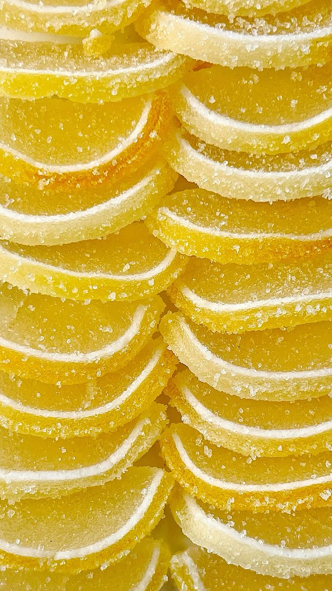
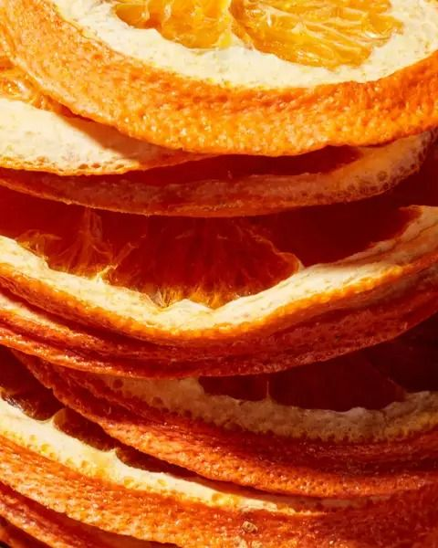

From peel to candy, every step of the Obzest process is designed around one principle: nothing gets thrown away.
Fresh fruit contains a lot of water — in many cases, more than 80%. When that water is slowly removed through careful low-heat drying, what's left behind is a smaller, more concentrated version of the fruit with a much longer shelf life. The sugars and flavors intensify, which is why dehydrated fruit often tastes sweeter and more complex than its fresh counterpart. Obzest citrus candy starts here.
People have been dehydrating fruit for thousands of years as a way to preserve food. Before refrigeration, drying fruit in the sun allowed it to last for months without spoiling. Today, the process is more controlled, but the idea is the same: remove moisture to prevent bacterial growth and concentrate flavor. The result is a shelf-stable, portable snack that packs a serious punch in a small package.
Since the water is gone, the natural sugars are more concentrated — a small handful delivers the flavor of a much larger piece of fresh fruit. That intensity is exactly what makes Obzest so addictive. We take that concentrated citrus character and candy it slowly, creating the "Sophisticated Sour" experience that keeps people coming back.
"We saw a massive opportunity where others saw trash."
Meet the Founder →Obzest was born from a simple, frustrating observation: commercial juicers discard mountains of nutrient-dense citrus peels every single day. Upcycling is the process of turning discarded or undervalued materials into something new — without breaking them down into raw components. Instead of destroying what exists, you transform it creatively. That philosophy is baked into everything we do.
Recycling breaks materials down into their basic components so they can be remade into new products. It requires energy, water, and industrial systems.
Upcycling skips the breakdown process entirely. It keeps the original material largely intact and transforms it creatively — no melting, no pulping, just redesign and reuse.
Obzest uses this principle at the core of our production model. We don't over-process our fruit — we trim, dehydrate, and candy the peel, then capture the expressed juice for premium syrups. The result is a brand that generates zero waste from the ground up, proving that the most sustainable products can also be the most delicious ones.
Every citrus fruit that enters our kitchen leaves as a finished product. The peels become our signature "Sophisticated Sour" candied citrus confections — sulfite-free, clean-label, and handcrafted in small batches in Washington, D.C. The juice expressed during production is captured and reserved for premium citrus syrups. Nothing is discarded. Nothing is wasted.
We're making candy while proving that a CPG brand can be 100% waste-free from the ground up. We believe the most responsible products should also be the most craveable — and Obzest is our proof of concept.
